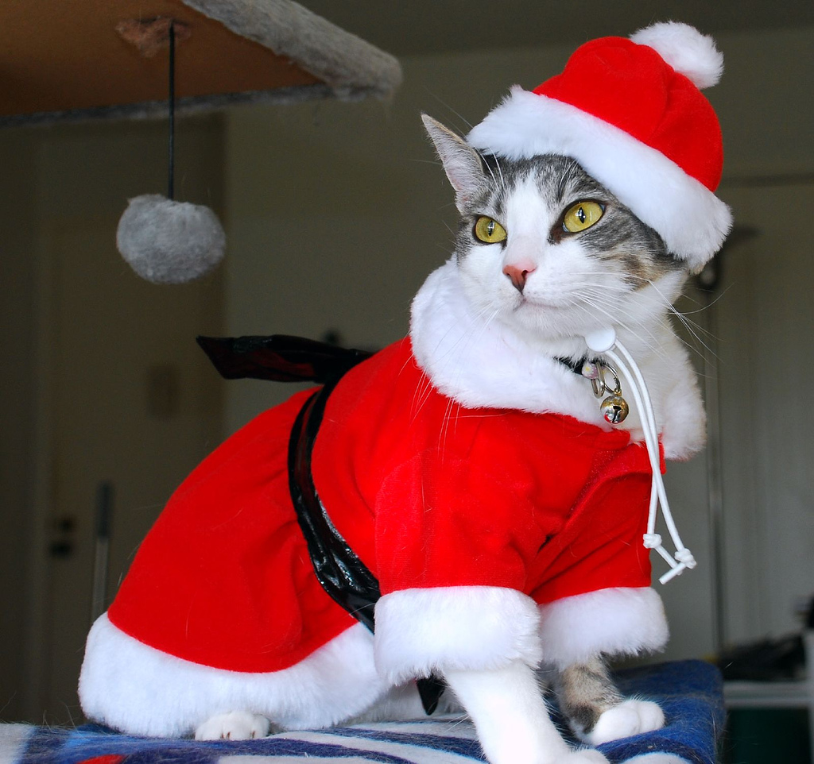

Пост про животных
Котики
Кошка — домашнее животное, одно из наиболее популярных (наряду с собакой) «животных-компаньонов». В настоящее время, в мире насчитывается около 600 млн домашних кошек, выведено около 200 пород, от длинношёрстных (персидская кошка) до лишённых шерсти (сфинксы). На протяжении 10 000 лет кошки ценятся человеком, в том числе за способность охотиться на грызунов и других домашних вредителей.

Собаки
Собака — домашнее животное, одно из наиболее популярных (наряду с кошкой) «животных-компаньонов». Собаки известны своими способностями к обучению, любовью к игре, социальным поведением. Выведены специальные породы собак, предназначенные для различных целей: охоты, охраны, тяги гужевого транспорта и другого, а также декоративные породы (например, болонка, пудель). Детёныши собаки называются щенками.